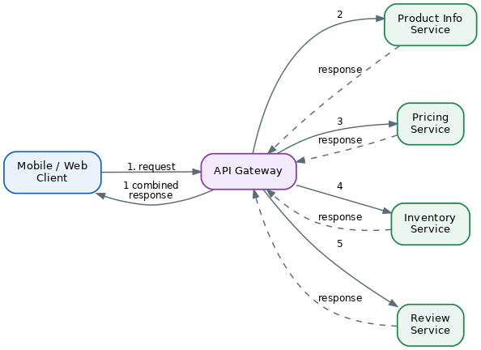
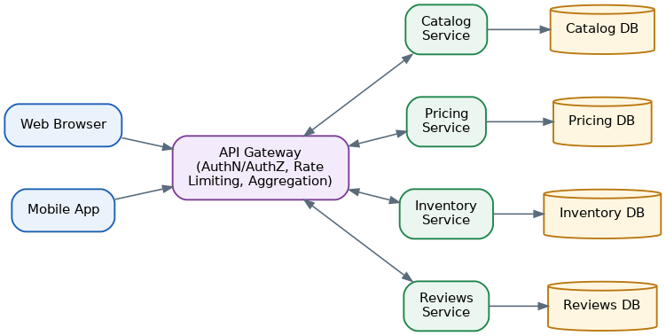

API Gateway Pattern
Table of Contents
Overview
Picture walking into a large hotel: you don't wander into the kitchen to order room service or hunt down the laundry room for fresh towels — you go to the front desk, and the concierge routes your request to whatever department actually handles it. An API gateway plays exactly that role for a microservices application. It is a single front door that every client — a web browser, a mobile app, or another company's system — talks to, instead of each client needing to know about, and directly call, dozens of individual backend services.
Technically, an API gateway is a server sitting between clients and the collection of microservices. When a request arrives, the gateway can either simply forward ("proxy") it straight through to the right service, or split it into several smaller calls to multiple services, gather all the answers, and combine them into a single response. Either way, the client only ever needs to know the gateway's address, never the internal map of the whole system.
The pattern became widely known through Netflix's engineering story. As Netflix's application grew into many small services, its mobile and TV apps needed to fetch information scattered across a large number of those services just to render one screen — slow and wasteful, especially over mobile networks. Netflix built a gateway layer able to adapt to the different needs of different devices, and this experience helped popularize the pattern industry-wide, later cataloged in detail by software architect Chris Richardson.
See also: Microservices → Load Balancing & API Gateway for a complementary treatment focused on routing algorithms and gateway-level cross-cutting concerns.
The Problem It Solves
Without a gateway, every client is left to fend for itself against a sprawling backend. Client applications would need to track which of potentially dozens of microservices to call for any given screen, and worry about where each service instance currently lives on the network — a moving target in modern cloud environments where instances scale up and down, and get rescheduled, constantly. Pushing that complexity into every client (and duplicating it across every client platform) is fragile and expensive to maintain.
The problem is sharpest when a single screen or feature needs small pieces of data from several different services at once. A product page, for example, might need basic product details, current price, stock availability, and customer reviews — each living in its own microservice. Without a gateway, the client itself has to make four separate network calls and stitch the results together, which is slow, particularly over a mobile connection.
The API Gateway Solution and Architecture
The API gateway pattern inserts a dedicated server between clients and the microservices fleet, and gives it four main jobs. First, it hides backend complexity: the client always talks to the same gateway address and never needs to learn the internal service topology. Second, it performs request aggregation — fanning a single incoming client request out to several backend services, waiting for the results, and merging them into one combined response, so the client makes just one call instead of many. Third, it is the natural, central place to implement "cross-cutting concerns" that essentially every request needs: authenticating who the caller is, authorizing what they're allowed to do, encrypting traffic, rate-limiting how many requests a client can make, and logging what happened. Implementing these once at the gateway is far simpler and more consistent than asking every microservice team to reimplement the same logic correctly on its own. Fourth, the gateway can translate between protocols — exposing a friendly HTTPS/REST API to the outside world while internally letting services use faster or more specialized protocols like gRPC, so internal technology choices never leak out to clients.
None of this is free. The gateway itself becomes a new piece of infrastructure a team has to build, test, deploy, and keep highly available. A poorly designed gateway can become a bottleneck every request must pass through, or worse, a single point of failure for the entire system. There is also a small amount of added latency from the extra network hop, though for most applications this cost is minor compared to the benefits gained.
Request Aggregation in Action
Before Netflix introduced a proper gateway layer, every device type — smart TV, phone, or web browser — called many small, fine-grained backend services directly to assemble a single screen. This was especially painful for mobile and TV apps on slower networks, since every extra round trip added noticeable delay. By introducing a gateway with device-specific adaptation logic, Netflix let each device get back exactly the shape of data it needed in a single call, instead of forcing every device to do the same stitching work that a powerful server could do far more efficiently.
A simplified walkthrough of a request flowing through a gateway for a product details page:
1. Mobile app sends one request: GET /products/123 → API Gateway
2. Gateway authenticates the request and validates the caller's access token
3. Gateway calls, in parallel:
- Product Info service
- Pricing service
- Inventory service
- Reviews service
4. Gateway waits for all responses (or a reasonable timeout)
and merges them into a single JSON payload
5. Gateway returns the one combined response to the mobile app
Performance Implications
Adding a gateway introduces one more network hop between the client and the backend, but in most real systems this adds only a small, often negligible amount of latency — especially compared to the time saved by avoiding several separate round trips from the client itself, particularly over slow mobile or long-distance networks.
To get the best performance, the gateway should call backend services in parallel whenever the calls don't depend on each other's results, rather than sequentially. Calling four services one after another might take the sum of all four response times; calling them in parallel takes roughly as long as the single slowest one. This is why gateways are often built using asynchronous, event-driven, or reactive programming styles that handle many simultaneous in-flight requests efficiently.
Caching at the gateway level is another important performance lever: if many clients request the same, rarely-changing piece of data, the gateway can store a copy temporarily and serve it directly, reducing both latency and backend load.
Because every request funnels through the gateway, it must be built to handle the application's full traffic load reliably. In practice, teams either use a managed cloud-provider gateway service that automatically scales across data centers or availability zones, or deploy their own reverse-proxy software (Kong, Envoy, NGINX) across multiple redundant instances behind a load balancer, so no single gateway instance becomes a single point of failure.
It's also wise for a gateway to use a circuit breaker — a safety mechanism that quickly stops sending requests to a backend service that is failing or responding too slowly, instead of letting requests pile up and threads get stuck waiting. This prevents one unhealthy microservice from dragging down the performance of the entire gateway, and in turn every other service behind it.
System Design Example
Consider a realistic online bookstore. A web browser and a mobile app both need to display a book's detail page, and both talk to a single API Gateway. The gateway checks the caller's identity token, applies rate limiting, and then routes or fans out the request to four backend microservices: a Catalog Service (title, author, description), a Pricing Service (current price and discounts), an Inventory Service (stock levels and shipping estimates), and a Reviews Service (star ratings and customer comments). Each of these microservices owns its own database and can be scaled, deployed, and updated independently of the others.

To find the current network location of a healthy instance of each of these four services — since instances can be added, removed, or moved as the system scales — the gateway relies on the Service Discovery pattern rather than hardcoded addresses. This keeps the whole system flexible: services can scale up during a big sale event, or be redeployed for updates, without the gateway's configuration needing to change by hand.
Key Insights
The clearest way to think about the API Gateway pattern is as a trade: it removes complexity and duplicated networking logic from every client, in exchange for taking on the responsibility of being correctly built, deployed, and operated as highly-available infrastructure. Used well — with parallel fan-out calls, sensible caching, and resilience mechanisms like circuit breakers — it turns a tangle of client-to-microservice calls into a single, simple, well-guarded front door.